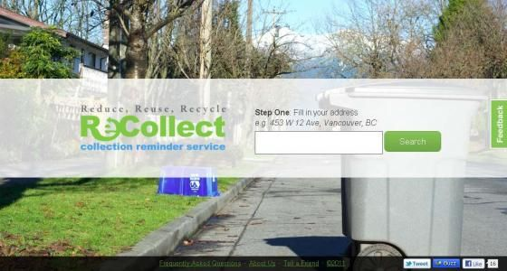
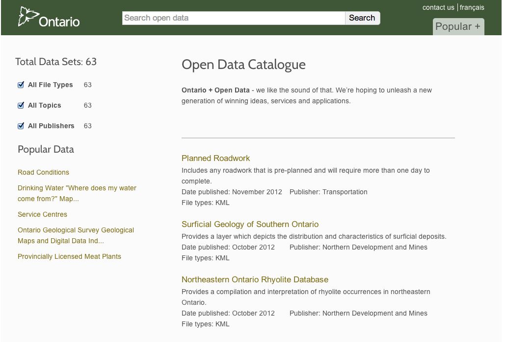

Housekeeping
Open Data
Wat do?
ALL FREE!
Find out when your bus will actually arrive!
TEXT 560560
OCTranspo App Gallery
OCTranspo Developer Resources
Open Data is...
Freely Accessible
And
Machine Readable
(and free to distribute/modify)
Mmmm...raw data
Mmmm...raw data on a map

Recollect
Dog park finder

Where is this data?
Municipal
Provincial
Federal
International

Corporations
Citizens

10:30 - 12:30
Sessions
10:30 - Champlain Room
Beautiful Data
By Amanda Shendruk
10:30 - 2nd Floor
Mobile Usability
By Thomas Gohard
11:30 - Champlain Room
Google Fusion Tables
By Edward & Daniel